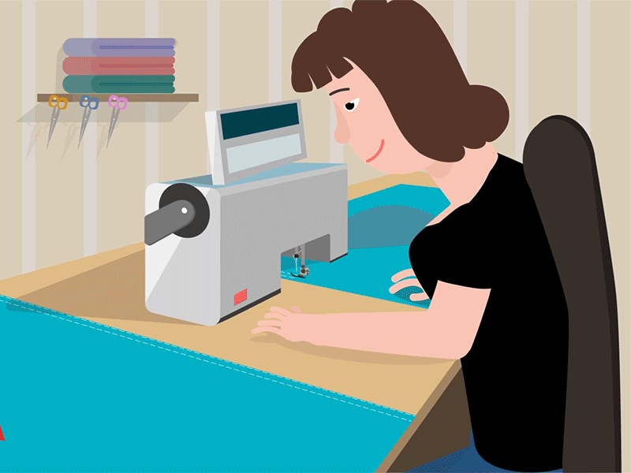

Sewing
Sewing is the craft of stitching fabrics together to create or repair items like clothing, accessories, and home decor. A sewing class typically covers a variety of skills, techniques, and tools to help students become proficient in the art of sewing. A sewing class provides a foundational understanding of both the technical and creative aspects of sewing. Participants gain confidence in their skills, allowing them to create their own garments and items while enjoying a fulfilling, hands-on craft.
Concepts covered in the Sewing class:

- Introduction to Sewing:
- Overview of sewing history and techniques
- Understanding the basic principles of sewing
- Sewing Tools and Equipment:
- Introduction to essential tools (sewing machine, needles, thread, scissors, pins)
- How to operate and maintain a sewing machine
- Fabric Knowledge:
- Types of fabrics and their characteristics
- Choosing the right fabric for different projects
- Understanding fabric grain, texture, and stretch
- Basic Sewing Techniques:
- Hand sewing vs. machine sewing
- Basic stitches (running stitch, backstitch, zigzag)
- How to read and follow a sewing pattern
- Cutting and Measuring:
- Measuring techniques for accurate fitting
- How to properly cut fabric and lay out patterns
- Importance of seam allowances
- Sewing Construction:
- Techniques for constructing seams, hems, and finishing edges
- Adding zippers, buttons, and other closures
- Understanding darts, pleats, and gathers
- Specialized Techniques:
- Appliqué, quilting, and embroidery basics
- Working with knit fabrics and stretch materials
- Creating lined garments and adding interfacing
- Project Development:
- Planning and executing simple projects (e.g., tote bags, pillow covers, simple garments)
- Troubleshooting common sewing problems (tension issues, skipped stitches)
- Finishing Techniques:
- Pressing and finishing techniques for a professional look
- Hand-finishing techniques like slip stitches
- Creative Exploration:
- Encouraging personal style and creativity
- Understanding color theory and fabric combinations
Practical Experience:
- Hands-on practice with various sewing projects.
- Learning through group projects or individual assignments.
- Sharing and critiquing work to foster improvement and creativity.